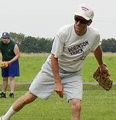
Tony Cork fires a pitch in game one of the doubleheader on June 28.
Cork threw 14 scoreless innings on the day and picked up two wins to move
to 4-0 on the season and lower his ERA to 1.12. |
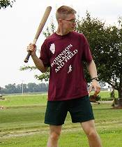
Justin Massey made his return to Corklestick on June 28 for the first time
since the 2000 season. Massey finished the day just 1-for-23. |
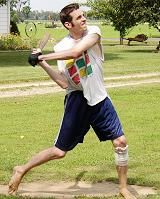
Patrick Cork had an outstanding day at the plate finishing the doubleheader
15-for-30 with 6 homeruns and 9 RBI. |
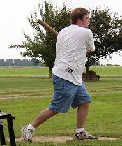
Nathan Burris made his debut on Saturday with a 7-for-27 effort including
a double and triple. |
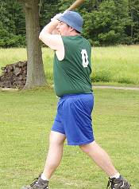
Dave Rueth connects on a pitch in the 2nd game of the doubleheader on June
28. Rueth hit the winning 2-run homer in the game and also picked
up his first career save going 4 innings and allowing just one run.. |
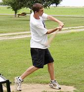
Nate Owens played in his first official chair baseball contest on June 28th.
Owens finished the day 6-for-22 with a double. |
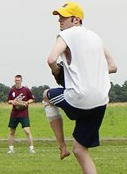
Patrick Cork goes into the
windup in game 2 of the June 28 doubleheader. Cork struck out 11 in
the game, but took the loss allowing two earned runs in 9 innings of work. |
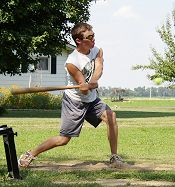
Jake Hoalt reaches for an
outside pitch in the Sunday afternoon game on June 29. Hoalt was 1-for-10
with a double in the game.
|
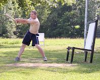
Josh Williamson swings through a fastball on June 29th. Williamson finished
the afternoon 4-for-10 and is hitting .306 on the year. |
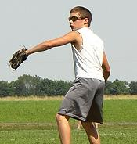
Jake Hoalt prepares to fire
a pitch on Sunday afternoon. Hoalt allowed 12 runs (8 earned) in his team's
12-0 loss. |
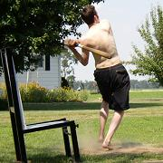
Patrick Cork turns on an inside
fastball for a triple in Sunday afternoon's contest. Cork tied a chair baseball
record with 12 RBI in the game as he went 7-for-13 with 4 homeruns.
|
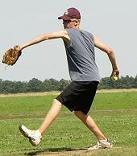
Josh Kapper made his first career start on Sunday by throwing a 6-hit shutout
in the 12-0 win. Kapper was also 5-for-13 at the plate and scored
5 runs.. |